МАТЕМАТИЧЕСКИЙ АНАЛИЗ.
ОПРЕДЕЛЕННЫЙ ИНТЕГРАЛ
Задача о вычислении пути
Водитель выехал в 8 ч из дома (D) и должен добраться до спортивного комплекса (K). Найти расстояние DK.
Первые 10 мин (1/6 ч) он ехал со скоростью v(c1) = 40 км/ч,
следующие 10 мин (1/6 ч) — со скоростью v(c2) = 10 км/ч, следующие 15 мин (1/4 ч) —
со скоростью v(c3) = 30 км/ч, следующие 15 мин (1/4 ч) — со скоростью v(c4) = 60 км/ч, последние
10 мин — со скоростью v(c5) = 100 км/ч.
Приехал в 9 ч. Оформим всю изложенную информацию в виде таблицы.
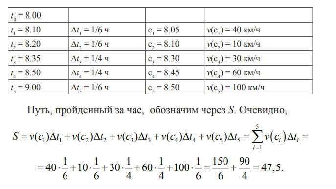
Получили, что расстояние
DK приближенно равно 47,5 км.
Понятно, что если бы водитель лучше следил за изменением скорости и чаще смотрел на спидометр, то таблица получилась бы
более длинная и расстояние
DK было бы найдено точнее.
Определение. Сумма
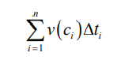
называется интегральной суммой.
Если в интегральной сумме
n устремим к ∞(
n → ∞), предполагая, что при этом Δ
tiстремится к нулю то
расстояние
DK найдем точно.
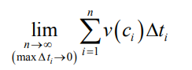
называется определенным интегралом. В нашем примере он будет обозначаться
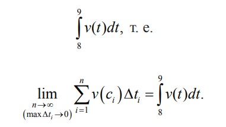
Определение определенного интеграла
Пусть на отрезке [a, b] задана функция f(x). Разобьем отрезок [a, b] точками:
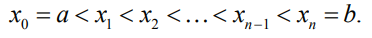
Обозначим
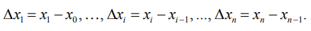
На отрезке [
x0,
x1] возьмем точку
c1, ... ,
На отрезке [
xi-1,
xi] возьмем точку
c1, ... ,
На отрезке [
xn-1,
xx] возьмем точку
c1, ... ,
c1 ∈ [
x0,
x1], ... ,
c1 ∈ [
xi-1,
xi].
Составим интегральную сумму:
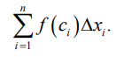
Определение. Определенный интеграл — это
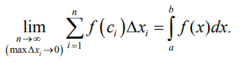
Число
a называется нижним пределом,
b — верхним пределом определенного интеграла.
Криволинейная трапеция
Пусть на отрезке [
a,
b] задана положительная функция
f(
x) > 0.
Проведем вертикальные прямые через точки
a и
b до пересечения
с графиком кривой
y =
f(
x). Полученные точки обозначим
A,
B.
Фигура
aABb, изображенная на рис. 36, называется криволинейной трапецией.
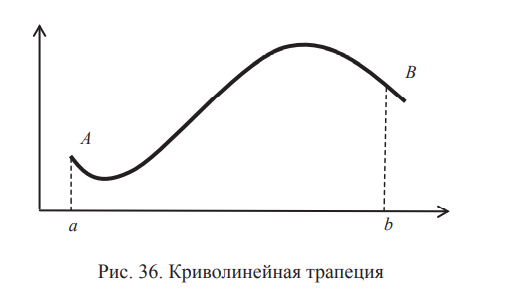
Геометрический смысл определенного интеграла
Найдем площадь криволинейной трапеции
SaABb. Заменим криволинейную трапецию ступенчатой фигурой (рис. 37) и найдем
площадь этой фигуры.
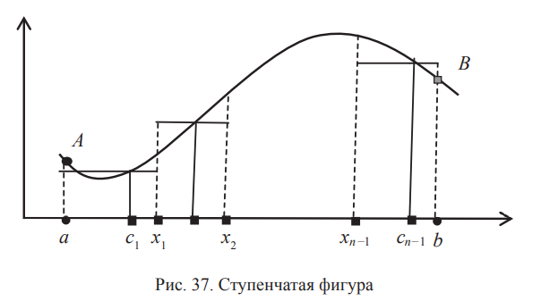
Ступенчатую фигуру будем строить так. Разобьем отрезок [
a,
b] точками
x0 =
a <
x1 <
x2 < ... <
xn-1 <
xn =
b
на
n частей. Длина
i‑й части Проведем через точки Δ
xi -
xi-1. Проведем через точки
x0,
x1,
x2, ...,
xn-1,
xn
вертикальные пунктирные линии. Криволинейная трапеция
SaABb
разобьется на
n криволинейных трапеций, каждую из которых заменим прямоугольником.
Чтобы построить первый прямоугольник, на отрезке [
x,
0,
x1] выберем любую точку
c1, найдем
ƒ(
c1)— высоту прямоугольника. Ширина прямоугольника равна Δ
x1. Аналогично построим остальные прямоугольники.
В результате получим:
ширина 1-го прямоугольника — Δ
x1, высота — ƒ(
c1), площадь ƒ(
c1)Δ
x1;
ширина 2-го прямоугольника — Δ
x2, высота — ƒ(
c2), площадь ƒ(
c2)Δ
x2.
.......................
Площадь
n-го прямоугольника ƒ(
cn)Δ
xn.
Площадь ступенчатой фигуры равна сумме площадей всех
прямоугольников (рис. 38).
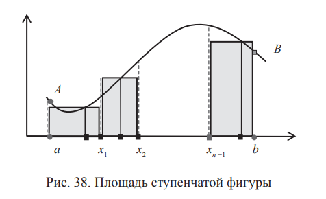
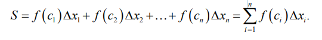
Чем уже будут прямоугольники, тем меньше площадь ступенчатой фигуры будет отличаться от площади криволинейной трапеции
SaABb.
Площадь
SaABb получим, если рассмотрим предел интегральной суммы
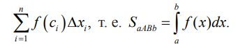
Итак, определенный интеграл
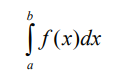
равен площади криволинейной трапеции, ограниченной осью
абсцисс, прямыми
x =
a,
x =
b и кривой
y = ƒ(
x).
Формула Ньютона — Лейбница
Пусть
g(
x) — первообразная функции ƒ(
x):
g'(
x) = ƒ(
x).
Справедлива формула Ньютона — Лейбница:
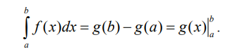
Пример 1. Найти интеграл 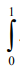
xdx
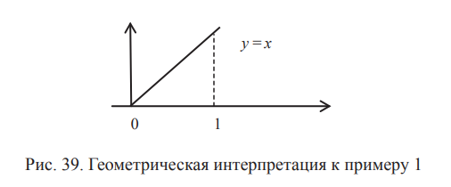
Интеграл легко вычисляется из геометрического смысла определенного интеграла. Он равен площади треугольника, т. е. 1/2.
Найдем его по формуле Ньютона — Лейбница. Получим
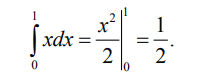
Вычисление площади фигуры
с помощью определенного интеграла
Требуется по рисунку найти площадь криволинейной
трапеции с помощью определенного интеграла и формулы
Ньютона — Лейбница.
Пример 2. Найти площадь фигуры, ограниченной параболой
y =
x2,
осью абсцисс и прямыми
x = −1 и
x = 2 (рис. 40).
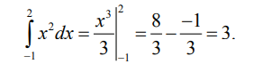
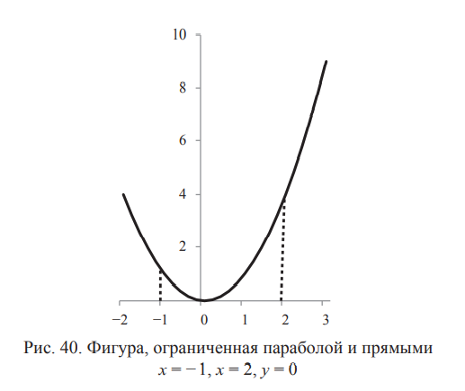
Пример 3. Найти площадь фигуры, ограниченной кривыми
y =
x2 и
y =
x2
2.
+ 2 (рис. 41)
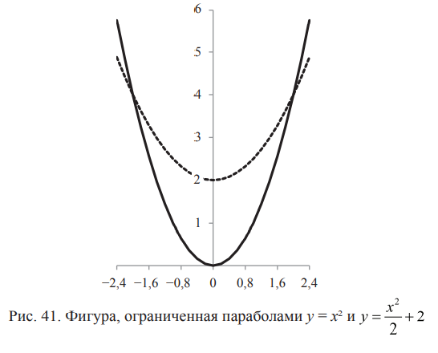
Найдем точки пересечения кривых
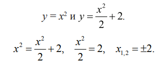
Следовательно, пределы интегрирования
a = −2,
b = 2.
Из площади, ограниченной верхней кривой
y =
x2, изображенной пунктиром, нужно вычесть площадь, ограниченную нижней
кривой
y =
x2
2.
+2 ,
изображенной сплошной линией
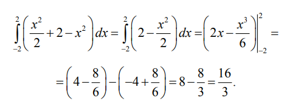
Таким образом, площадь искомой фигуры равна 16/3.
а этом заканчивается наш небольшой курс по высшей математике, который позволил вам глубже познакомиться с такими
важными математическими понятиями, как системы линейных
алгебраических уравнений; прямая и кривые второго порядка;
функции, производные, неопределенные и определенные интегралы.